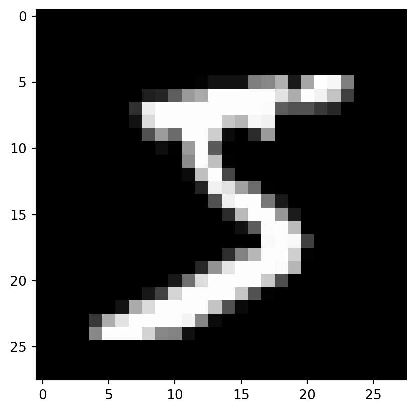

import torch
import torchvision
# Download the data
train = torchvision.datasets.MNIST(root = "static/", download = True)
test = torchvision.datasets.MNIST(root = "static/", train = False)Part 3: Logistic Regression and Working with Images
This section will be about “logistic” regression (see why I don’t like the name later) as well as working with images in torch using the MNIST dataset. Working with the MNIST dataset is something I read a lot of examples about but nothing something. First we need to get the dataset.
Now since the dataset is composed of 28x28 images, we can plot one of them to see what we are dealing with.
import matplotlib.pyplot as plt
ex_plot = plt.imshow(train[0][0], cmap = 'gray')
plt.show(ex_plot)
So now that we have all these images (which we will load lazily, which I learned is actually a nice property of a tensorflow dataset / data loader) we need to turn them into something we can use and model with torch. So first we have to convert the images into tensors. Apparently the torchvision.transforms has specific functionality for doing this.
import torchvision.transforms
train = torchvision.datasets.MNIST(
root = "static/",
train = True,
transform = torchvision.transforms.ToTensor()
)
test = torchvision.datasets.MNIST(
root = "static/",
train = False,
transform = torchvision.transforms.ToTensor()
)I already know how a grayscale image is stored in the computer (thanks to when I had to do a bunch of microscopy stuff in undergrad) so I’ll skip messing around with that. The resulting tensor will be 1x28x28 (instead of just 28x28 for whatever reason, idk) where each of the values is the intensity of that pixel. Anyways now that we have actual tensors that we can use in torch models, we want to do a bit more housekeeping.
R guru Julia Silge calls this bit “spending the data budget” which I like and I’ve taken to saying that also. We already have the standard test set (used so that different researchers can directly compare their models on this canonical dataset) but we’ll also want a validation set so we can do better at training out model. We’ll take a set of the training data and use it as the validation set. We’re allowed to test our models’ performances on this dataset, unlike the test set which we cannot see until we have finished model-building if we want unbiased performance metrics.
train_ds, val_ds = torch.utils.data.random_split(
train, [50000, 10000]
)And since this dataset is so big and also filled with images, we’ll want to create a data loader to handle batch loading the data. I think this is actually a good application of this, unlike last time. Note that I picked 128 as the batch size just cause the tutorial did. We want to shuffle the training data each time it is loaded because this can help in training the model, but since the validation data are only used for evaluation, not for model fitting, they do not need to be shuffled (it doesn’t matter if they are or not).
from torch.utils.data import DataLoader
bs = 128
train_loader = DataLoader(train_ds, bs, shuffle = True)
val_loader = DataLoader(test, bs)1 Doing “logistic” regression
Now this is the one part of the tutorial that I take issue with. It keeps calling this logistic regression. What we’re actually doing here is called softmax multinomial regression. According to wikipedia, a lot of people also call it logistic regression and it’s a common way to refer to this model. But the machine learning people who call it that also use stochastic gradient descent for regression, so. You know. Anyways, logistic regression gets its name from the logit link function, which we aren’t using here. So I don’t think it’s appropriate to call this model logistic regression. Technically we shouldn’t even call it softmax regression, we should call it softargmax regression, because softmax is an approximation to the argmax function, not to the max function. So you know what? I’m going to call it softargmax multinomial regression and none of you can stop me. Let’s call things what they actually are.
Anyways.
We will, of course, begin by constructing a neural network with a neural network with 10 target nodes (for the digits 0 to 9 in the data set). Since we’re doing torch or whatever we have to do a neural net for everything. And since we’re doing softargmax multinomial regression, we get 10 output classes instead of the standard 9 plus one reference group. Which is fine, I don’t have a problem with that part. We’ve been through this before so I won’t say too much more about it.
The first argument is the input space. We actually have 28 x 28 features per image, that’s how many pixels we have and each one is a feature we’ll use for model fitting. Then we have the 10 classes that will be the number of target nodes we have.
import torch.nn as nn
model = nn.Linear(28 * 28, 10)This has a lot more parameters than any of the examples we’ve seen before, but it’s actually the same thing. It’s like if you had a little clock, it’s basically the same as a big clock but just different sizes. If you know how the little one works you pretty much know how the big one works. (Clockmakers DO NOT call me out.)
Now one thing we will have to deal with is the dimensions of our images. We’ve just told our model that we have \(28 \times 28 = 784\) input variables. So of course it will complain if we put in a \(28 \times 28\) tensor instead of a \(1 \times 784\) vector tensor of inputs in the correct order, it just won’t know what to do with all of them. And we gotta make sure everything stays in the right order or our model will just be absolutely donked.
For some ungodly reason, the tutorial wants me to define a new class here. I’m sure there’s going to be an example later on where this actually makes sense. But right now, defining a new class just to call the .reshape method on the tensors is INSANE to me. Like using gradient descent for linear regression we are again trying to fill a thimble with a fire hose.
I actually tried to do it a bunch of different ways but due to the way everything in python is an insane and there’s no consistency to what’s immutable and what things get returned from functions, I’ll just do it this way. Even though it makes much more sense to any rational human to just reshape all of the data first. Especially if we’re fitting all the models multiple times. That’s just like, good programming (not repeating code that doesn’t need to be repeated). I think what I have below is not the best way to do this, but it’s the only way I could find that didn’t require me to load everything into memory at once, since I couldn’t figure out how to overwrite each item from a DataSet as it was loaded.
I hate repeating this much code, but if I have to do it to avoid needlessly repeating a transformation every time I call the model, I will. I guess the age of code optimization is truly dead because apparently (at least from my naive googling) there is no simple way to apply a transformation to an entire DataSet after it is created. This entire torch ecosystem is insane to me, maybe I need to learn tensorflow also and see if it makes me want to smack my head into the wall the same amount or not.
train_val = torchvision.datasets.MNIST(
root = "static/",
train = True,
transform = torchvision.transforms.Compose([
torchvision.transforms.ToTensor(),
torchvision.transforms.Lambda(lambda x: x.reshape(-1, 784))
])
)
test = torchvision.datasets.MNIST(
root = "static/",
train = False,
transform = torchvision.transforms.Compose([
torchvision.transforms.ToTensor(),
torchvision.transforms.Lambda(lambda x: x.reshape(-1, 784))
])
)
train_ds, val_ds = torch.utils.data.random_split(
train_val, [50000, 10000]
)
train_loader = DataLoader(train_ds, bs, shuffle = True)
val_loader = DataLoader(val_ds, bs)But I guess who cares if our code is good or optimized if we’re doing deep learning, right? Anyways now let’s check that our model works.
for img, lbl in train_loader:
print(img.shape)
out = model(img.squeeze())
print(out)
breaktorch.Size([128, 1, 784])
tensor([[ 0.2064, 0.0622, -0.1982, ..., 0.0494, -0.2102, -0.1518],
[ 0.0579, -0.0297, 0.1772, ..., -0.0649, -0.3285, -0.0511],
[ 0.1672, 0.0966, 0.0027, ..., -0.0783, -0.1746, -0.1351],
...,
[ 0.0534, -0.0795, -0.0459, ..., 0.0106, -0.2020, -0.0723],
[ 0.0329, 0.0208, 0.1037, ..., 0.0175, -0.0774, -0.1647],
[ 0.2122, 0.0861, 0.2479, ..., 0.0037, -0.0769, -0.0358]],
grad_fn=<AddmmBackward0>)Yes, our model runs now, thank goodness. If it didn’t I might call it quits and decided that this pytorch nonsense isn’t for me. But now I shall persist, I suppose.
Now we can fit the model. We’ll use softargmax (aka the erroneously named softmax) as the “activation function”. Since we only have one layer in this neural net (since it is a linear model), this basically means we will take the inputs, put them in the linear model, then put them through the softargmax function.
# Rename it to the good name :)
def softargmax(input, dim = None, _stacklevel = 3, dtype = None):
return torch.nn.functional.softmax(input, dim, _stacklevel, dtype)
softargmax(out.squeeze(), dim = 1)tensor([[0.1231, 0.1066, 0.0821, ..., 0.1052, 0.0811, 0.0860],
[0.0983, 0.0901, 0.1108, ..., 0.0869, 0.0668, 0.0882],
[0.1168, 0.1088, 0.0990, ..., 0.0913, 0.0830, 0.0863],
...,
[0.1044, 0.0914, 0.0946, ..., 0.1001, 0.0809, 0.0921],
[0.1004, 0.0992, 0.1078, ..., 0.0989, 0.0900, 0.0824],
[0.1117, 0.0985, 0.1158, ..., 0.0907, 0.0837, 0.0872]],
grad_fn=<SoftmaxBackward0>)